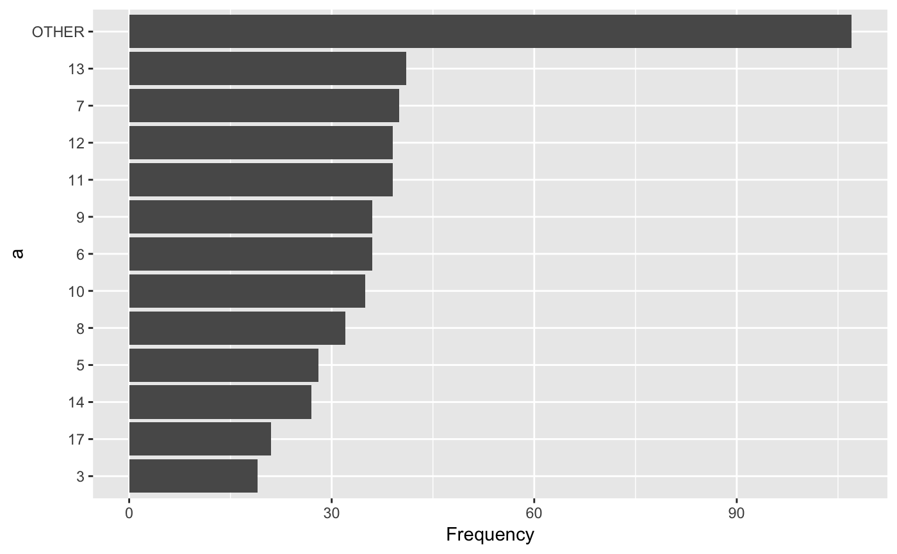
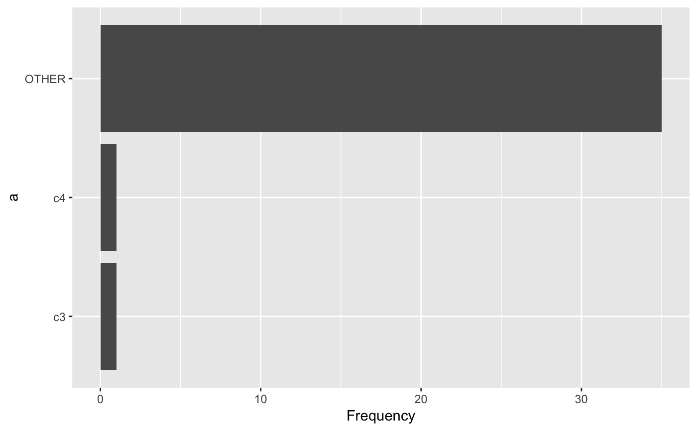

Sometimes discrete features have sparse categories. This function will group the sparse categories for a discrete feature based on a given threshold.
Usage
group_category(
data,
feature,
threshold,
measure,
update = FALSE,
category_name = "OTHER",
exclude = NULL
)Arguments
- data
input data
- feature
name of the discrete feature to be collapsed.
- threshold
the bottom x% categories to be grouped, e.g., if set to 20%, categories with cumulative frequency of the bottom 20% will be grouped
- measure
name of feature to be used as an alternative measure.
- update
logical, indicating if the data should be modified. The default is
FALSE. Setting toTRUEwill modify the input data.table object directly. Otherwise, input class will be returned.- category_name
name of the new category if update is set to
TRUE. The default is "OTHER".- exclude
categories to be excluded from grouping when update is set to
TRUE.
Value
If update is set to FALSE, returns categories with cumulative frequency less than the input threshold. The output class will match the class of input data.
If update is set to TRUE, updated data will be returned, and the output class will match the class of input data.
Details
If a continuous feature is passed to the argument feature, it will be force set to character.
Examples
# Load packages
library(data.table)
# Generate data
data <- data.table("a" = as.factor(round(rnorm(500, 10, 5))), "b" = rexp(500, 500))
# View cumulative frequency without collpasing categories
group_category(data, "a", 0.2)
#> a cnt pct cum_pct
#> <char> <int> <num> <num>
#> 1: 7 40 0.080 0.080
#> 2: 12 40 0.080 0.160
#> 3: 11 39 0.078 0.238
#> 4: 13 38 0.076 0.314
#> 5: 9 36 0.072 0.386
#> 6: 10 35 0.070 0.456
#> 7: 6 35 0.070 0.526
#> 8: 8 32 0.064 0.590
#> 9: 5 28 0.056 0.646
#> 10: 14 27 0.054 0.700
#> 11: 17 21 0.042 0.742
#> 12: 3 19 0.038 0.780
# View cumulative frequency based on another measure
group_category(data, "a", 0.2, measure = "b")
#> a cnt pct cum_pct
#> <char> <num> <num> <num>
#> 1: 12 0.10075799 0.10121955 0.1012195
#> 2: 7 0.08371609 0.08409958 0.1853191
#> 3: 10 0.07508119 0.07542513 0.2607443
#> 4: 8 0.07119366 0.07151979 0.3322640
#> 5: 11 0.07070651 0.07103040 0.4032945
#> 6: 6 0.06954068 0.06985924 0.4731537
#> 7: 13 0.06538843 0.06568796 0.5388416
#> 8: 9 0.06137675 0.06165791 0.6004996
#> 9: 14 0.05400611 0.05425350 0.6547531
#> 10: 5 0.04473538 0.04494031 0.6996934
#> 11: 17 0.04255355 0.04274848 0.7424418
#> 12: 15 0.04066920 0.04085550 0.7832973
# Group bottom 20% categories based on cumulative frequency
group_category(data, "a", 0.2, update = TRUE)
plot_bar(data)

# Exclude categories from being grouped
dt <- data.table("a" = c(rep("c1", 25), rep("c2", 10), "c3", "c4"))
group_category(dt, "a", 0.8, update = TRUE, exclude = c("c3", "c4"))
plot_bar(dt)

# Return from non-data.table input
df <- data.frame("a" = as.factor(round(rnorm(50, 10, 5))), "b" = rexp(50, 10))
group_category(df, "a", 0.2)
#> a cnt pct cum_pct
#> 1 10 7 0.14 0.14
#> 2 11 5 0.10 0.24
#> 3 14 4 0.08 0.32
#> 4 6 4 0.08 0.40
#> 5 16 3 0.06 0.46
#> 6 13 3 0.06 0.52
#> 7 7 3 0.06 0.58
#> 8 12 3 0.06 0.64
#> 9 19 2 0.04 0.68
#> 10 9 2 0.04 0.72
#> 11 20 2 0.04 0.76
#> 12 15 2 0.04 0.80
group_category(df, "a", 0.2, measure = "b", update = TRUE)
#> a b
#> 1 OTHER 0.054965027
#> 2 11 0.144656546
#> 3 14 0.083169172
#> 4 16 0.213948655
#> 5 OTHER 0.080024696
#> 6 13 0.124592741
#> 7 10 0.256929572
#> 8 OTHER 0.003419408
#> 9 14 0.098786739
#> 10 10 0.069425177
#> 11 OTHER 0.001624242
#> 12 10 0.863716054
#> 13 OTHER 0.044421191
#> 14 13 0.020331713
#> 15 OTHER 0.103372486
#> 16 OTHER 0.133517823
#> 17 6 0.047434915
#> 18 OTHER 0.031668132
#> 19 13 0.081896676
#> 20 OTHER 0.006090181
#> 21 12 0.071219310
#> 22 14 0.064981094
#> 23 10 0.285785574
#> 24 6 0.073774583
#> 25 16 0.054916968
#> 26 12 0.005104824
#> 27 6 0.014855876
#> 28 OTHER 0.092099438
#> 29 OTHER 0.070745972
#> 30 OTHER 0.031218843
#> 31 16 0.067868470
#> 32 10 0.066864912
#> 33 2 0.088797072
#> 34 10 0.039481432
#> 35 OTHER 0.021024986
#> 36 12 0.202653392
#> 37 OTHER 0.104911416
#> 38 OTHER 0.077060431
#> 39 11 0.039111814
#> 40 6 0.096057286
#> 41 OTHER 0.028048669
#> 42 OTHER 0.059014897
#> 43 14 0.041757003
#> 44 2 0.289007986
#> 45 11 0.024127883
#> 46 OTHER 0.112046068
#> 47 11 0.007291429
#> 48 11 0.081413140
#> 49 OTHER 0.019381823
#> 50 10 0.100349110
group_category(df, "a", 0.2, update = TRUE)
#> a b
#> 1 19 0.054965027
#> 2 11 0.144656546
#> 3 14 0.083169172
#> 4 16 0.213948655
#> 5 9 0.080024696
#> 6 13 0.124592741
#> 7 10 0.256929572
#> 8 20 0.003419408
#> 9 14 0.098786739
#> 10 10 0.069425177
#> 11 15 0.001624242
#> 12 10 0.863716054
#> 13 19 0.044421191
#> 14 13 0.020331713
#> 15 7 0.103372486
#> 16 9 0.133517823
#> 17 6 0.047434915
#> 18 OTHER 0.031668132
#> 19 13 0.081896676
#> 20 7 0.006090181
#> 21 12 0.071219310
#> 22 14 0.064981094
#> 23 10 0.285785574
#> 24 6 0.073774583
#> 25 16 0.054916968
#> 26 12 0.005104824
#> 27 6 0.014855876
#> 28 OTHER 0.092099438
#> 29 OTHER 0.070745972
#> 30 OTHER 0.031218843
#> 31 16 0.067868470
#> 32 10 0.066864912
#> 33 OTHER 0.088797072
#> 34 10 0.039481432
#> 35 OTHER 0.021024986
#> 36 12 0.202653392
#> 37 OTHER 0.104911416
#> 38 20 0.077060431
#> 39 11 0.039111814
#> 40 6 0.096057286
#> 41 OTHER 0.028048669
#> 42 15 0.059014897
#> 43 14 0.041757003
#> 44 OTHER 0.289007986
#> 45 11 0.024127883
#> 46 OTHER 0.112046068
#> 47 11 0.007291429
#> 48 11 0.081413140
#> 49 7 0.019381823
#> 50 10 0.100349110